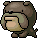

-
Mindset
1需要自行蒐集公司資料與素材
2尚未建立默契，需要先出精緻一點的設計稿
用潦草的草稿討論，可能會被質疑3要做出對標 Apple 等級的官網
-
0614
- 入職啦！
-
0615
- 開案說明
- 6
-
0625會議
- 策略規劃、3款 Ref
- 5
-
0707會議
- 首頁四款提案
- 回饋：架構、內容都需要修改
- 電腦灌了 AI 工具
首頁+1事蹟
- 獨自蒐集全部文案與素材
首頁至多 3 款
- 1
-
0709會議
- 首頁 V5 架構
事蹟
- 東輝加入了團隊
- 自己更新了全部架構
整合舊文案與新方向訂內容
- 4
-
0716
- 首頁 V5 完成
- 7
-
事蹟
- 製作公司全專案列表
外人沒有檔案權限
問題
約不到會議時間
專案延宕
-
0728會議
- 討論首頁 V5 + 內頁初稿
- 從「互動細胞」改為「JCO」，內容需要調整
- 素材使用全 AI
- Experience 內頁內容可簡化
- Research 定稿
- Experience 列表定稿
- 9
-
0811
- 回饋：技術影片可以試新題材
- 規劃後續時程
首頁+1問題
- 發現 AI 素材製作時間長
- 詢問東輝是否有可能協助產素材
-
0812會議
- 全文案、Vision、製作時程討論
- Neco 造型討論
- 回饋：多項修改，顏色、圖片、版面等等
提出時程規劃
- 8月底 | 首頁完成、Vision 定稿
- 10月底 | 網站 1.0 上線
事蹟
- Neco 概念發想
不會有 Neco 的誕生
問題
- 不斷來回修改，
需要確立哪些人需要同意版面
- 5
-
0820會議
- 首頁影片用太空人版本
- 首頁定稿
- Neco 提案通過，可招募美術進隊
- Vision 概念確認
- 時程確認
0820時程規劃確認
- 8月底 | 首頁完成、Vision 定稿
- 10月底 | 網站 1.0 上線
-
0821會議
- 和小刀討論 Neco 造型方向
- 1
-
0825會議
- 選出 3 種 Neco 造型做提案
- 1
-
0827會議
- Neco 造型定案
- 5
-
0904會議
- Neco 造型根據公仔調整
事蹟
- 首頁完成部署
- Vision 因 Neco 討論延後定稿
- 2
-
0909
- 根據受眾調整 Experience 內容稿
Experience 內頁+1 - 3
-
0915
- Experience 內頁定稿
提出時程規劃
- 有11月底、12月底兩種方案
- 希望維持10月底完成
- 1
-
0918
- 兩位美術進隊
- 提出要為 TCG 做準備
Experience 內頁+1事蹟
- 不用再先行和 Milk 確認網頁內容
事蹟
- 製作素材清單
- 建立討論的 DC 頻道與提交規格
- 製作 AI 工具的 skill 給美術使用
問題
- 需要建立網頁工作流
目前一直卡在修改、設計
- 5
-
0930
Vision 定稿
Vision+1 - 7
-
1001-1005
- 首頁素材幾乎完成
- Vision 頁面動態流暢度不好
即時更新版面
Vision+1 -
事蹟
- 教美術 AI 相關技巧
-
校正美術給的素材，包含人種構圖色調一致性等等
提出具體的修改需求
-
1006
- Vision 頁面完成
-
事蹟
- 請智哥協助美術
安裝 Midjourney
- 請智哥協助美術
-
1008
- Experience 頁面完成
-
1013
- Research 頁面完成
-
1016
- 全頁面完成
事蹟
- 全頁面部署到測試站上線
-
從提案到定稿
迭代 2 次+
Experience 內頁35 天
首頁32 天
Vision26 天
Experience 列表頁0 天
Research0 天
